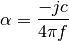
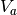
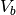
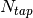
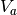
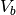
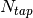
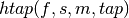

The transmission channel¶
%matplotlib inline
from pylayers.antprop.rays import *
import scipy.fftpack as fft
from pylayers.gis.layout import *
from pylayers.antprop.signature import *
from pylayers.simul.link import *
import pylayers.signal.bsignal as bs
import pylayers.signal.waveform as wvf
from pylayers.simul.simulem import *
import matplotlib.pyplot as plt
import time
WARNING:traits.has_traits:DEPRECATED: traits.has_traits.wrapped_class, 'the 'implements' class advisor has been deprecated. Use the 'provides' class decorator.
<matplotlib.figure.Figure at 0x2b9834cfb550>
We start by constructing a propagation channel with the dedicated class DLink. We specify a Layout as well as the two extremities of the link. Antennas are also specified.
L = Layout('defstr3.ini')
L.Gs.node[1]['ss_name']=['WOOD','AIR','METAL']
L.build()
tx=array([759,1114,1.0])
rx=array([761,1114,1.5])
Lk = DLink(a=tx,b=rx,Aa=Antenna('Omni'),Ab=Antenna('Omni'))
The full evaluation and hdf5 storage of the channel is done with the eval function. The force option is for recalculating everything whatever what has been previously calculated.
ak,tauk=Lk.eval()
Signatures'> from 2_2_3 loaded
Rays'> from 3_2_6 loaded
Ctilde'> from 2_6_0 loaded
Tchannel'> from 2_6_0_0_0_1_1 loaded
f = plt.figure(figsize=(15,15))
f,a=Lk.C.show(cmap='jet',typ='l20',fig=f,vmin=-100,vmax=-20,fontsize=22)

The transmission channel is stored in H
Lk.H
freq :2.0 10.0 161
shape :(136, 161)
tau :6.87184270936 92.5890113665
dist :2.06155281281 27.7767034099
Once the channel has been calculated, we define an IR-UWB waveform.
fGHz=np.arange(2,12,.1)
wav = wvf.Waveform(fcGHz=5,bandGHz=3)
wav.show()

Cwood is an object which contains all the information about the propagation channel.
Lk.show()
(<matplotlib.figure.Figure at 0x2b98353c8210>,
<matplotlib.axes.AxesSubplot at 0x2b9835c61e50>)
The Ctilde channel can be sorted with respect to delay
Lk.H
freq :2.0 10.0 161
shape :(136, 161)
tau :6.87184270936 92.5890113665
dist :2.06155281281 27.7767034099
len(Lk.fGHz)
181
f = plt.figure(figsize=(20,10))
f,a =Lk.H.show(fig=f,cmap='jet')

The Friis factor¶
The Friis factor is :

This factor is fundamental and should be applied only once. The energy method has a parameter Friis which indicates if this factor has to be used for the calculation of the energy. By default the link is evaluated with the Friis factor. This can be checked at the end of the repr of H.
Lk.H
freq :2.0 10.0 161
shape :(136, 161)
tau :6.87184270936 92.5890113665
dist :2.06155281281 27.7767034099
If this factor has already been applied the energy function should be called with the option Friis set to False
Emean=Lk.H.energy(Friis=False,mode='mean')
Eint=Lk.H.energy(Friis=False,mode='integ')
Ecenter=Lk.H.energy(Friis=False,mode='center')
Efirst=Lk.H.energy(Friis=False,mode='first')
Elast=Lk.H.energy(Friis=False,mode='last')
print Efirst[0],Elast[0]
3.35253916464e-05 1.34101566585e-06
On the figure below we have selected a LOS situation and we compare the energy for each path with the LOS values (the straight line). The 3 straight lines coresponds to the Free space path loss formula for 3 frequencies (f = 2GHz,f=6GHz,f=10GHz). For those 3 frequencies the first path is perfectly on the curve, which is a validation the observed level.
Lk.H.y.shape
(136, 161)
f1 = 2
f2 = 10
f3 = 6
fig = plt.figure(figsize=(10,5))
a = plt.semilogx(Lk.H.taud,10*np.log10(Efirst),'.r',label='f=2GHz')
a = plt.semilogx(Lk.H.taud,10*np.log10(Emean),'.b',label='mean')
a = plt.semilogx(Lk.H.taud,10*np.log10(Elast),'.g',label='f=10GHz')
a = plt.semilogx(Lk.H.taud,10*np.log10(Eint),'.k',label='integral')
a = plt.semilogx(Lk.H.taud,10*np.log10(Ecenter),'.c',label='6GHz')
plt.xlabel(r'$\tau$ (ns)')
plt.ylabel('Path Loss (dB)')
LOS1 = -32.4-20*np.log10(Lk.H.taud*0.3)-20*np.log10(f1)
LOS2 = -32.4-20*np.log10(Lk.H.taud*0.3)-20*np.log10(f2)
LOS3 = -32.4-20*np.log10(Lk.H.taud*0.3)-20*np.log10(f3)
plt.semilogx(Lk.H.taud,LOS1,'r')
plt.semilogx(Lk.H.taud,LOS2,'g')
plt.semilogx(Lk.H.taud,LOS3,'c')
plt.semilogx(tauk,20*np.log10(ak),'+')
plt.ylim([-120,0])
plt.legend()
<matplotlib.legend.Legend at 0x2b983540d510>
a = plt.semilogx(Lk.H.taud,10*np.log10(Emean),'.b',label='mean')
plt.semilogx(tauk,20*np.log10(ak),'+')
plt.ylim([-120,0])
plt.legend()
<matplotlib.legend.Legend at 0x2b98353de550>
CIR=bs.TUsignal(tauk,np.zeros(len(tauk)))
CIR.aggcir(ak,tauk)
CIR.stem()
plt.title('Infinite bandwidth CIR')
<matplotlib.text.Text at 0x2b98356b3d90>
MeanDelay = CIR.tau_moy()
DelaySpread = CIR.tau_rms()
print MeanDelay,DelaySpread
37.3831958728 18.5606177248
f = plt.figure(figsize=(20,10))
f=Lk.H.show(cmap='jet',fig=f)

The cut method applies an energy thresholding on the transmission channel.
Lk.H.cut()
f = plt.figure(figsize=(20,10))
f=Lk.H.show(cmap='jet',fig=f)
The tap method¶
The tap methods takes as parameters : + The system bandwidth  expressed in MHz + The two extremities velocities  and
 + The number of taps to be evaluted  + The
number of time samples
expressed in MHz + The two extremities velocities  and
 + The number of taps to be evaluted  + The
number of time samples  + The number of spatial realizations
+ The number of spatial realizations

This method returns a Multi Dimensional Array 
htap has 4 axes.
- axis 0 is frequency,
- axis 1 is spatial realization
- axis 2 is discrete time
- axis 3 is tap index
Va = 10
Vb = 10
fcGHz = 4.5
Nm = 50
Ns = 10
WMHz = 20
Ntap = 10
htap,b,c,d = Lk.H.tap(WMHz=WMHz,Ns=Ns,Nm=Nm,Va=Va,Vb=Vb,Ntap=Ntap)
np.shape(htap)
(161, 10, 50, 10)
The second parameter is the time integration of htap
- axis 0 i frequency
- axis 2 is spatial (realization)
- axis 2 is tap
b.shape
(161, 10, 10)
np.shape(c)
(161, 50, 10)
d.shape
(99,)
The figure below illustrates the joint frequency and spatial fluctuation for the first channel tap. :exit
img = plt.imshow(abs(b[:,:,0]),interpolation='nearest',extent=(0,1000,fGHz[-1],fGHz[0]))
plt.axis('tight')
plt.colorbar()
plt.xlabel('spatial realizations')
plt.ylabel('Frequency GHz')
<matplotlib.text.Text at 0x2b9836fab250>

f = plt.figure(figsize=(10,4))
h = plt.hist(np.real(b[0,:,0])*1e5,40,normed=True)
mmax = 0.3*WMHz*1e6/(2*fcGHz*(Va+Vb))
tmaxms = 1000*mmax/(WMHz*1e6)
plt.imshow(abs(c[:,:,1]),interpolation='nearest',extent=(0,tmaxms,fGHz[-1],fGHz[0]))
plt.axis('tight')
plt.colorbar()
plt.xlabel('Discrete Time (ms)')
plt.ylabel('frequency (GHz)')
<matplotlib.text.Text at 0x2b98356d5590>
plt.plot(abs(c[0,:,0]))
[<matplotlib.lines.Line2D at 0x2b9836cef650>]
h = c[:,:,2]
import scipy.fftpack as fft
H = fft.fft(h,axis=1)
plt.imshow(fft.fftshift(abs(H)))
plt.axis('tight')
(-0.5, 49.5, 160.5, -0.5)
#from pylayers.util.mayautil import *
#m=VolumeSlicer(data=abs(htap[:,0,:,:]))
#m.configure_traits()
from IPython.core.display import HTML
def css_styling():
styles = open("../styles/custom.css", "r").read()
return HTML(styles)
css_styling()